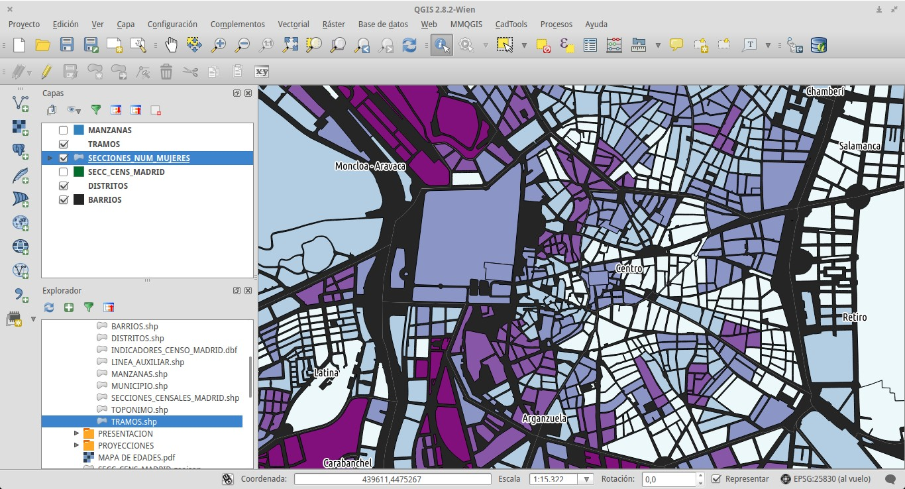
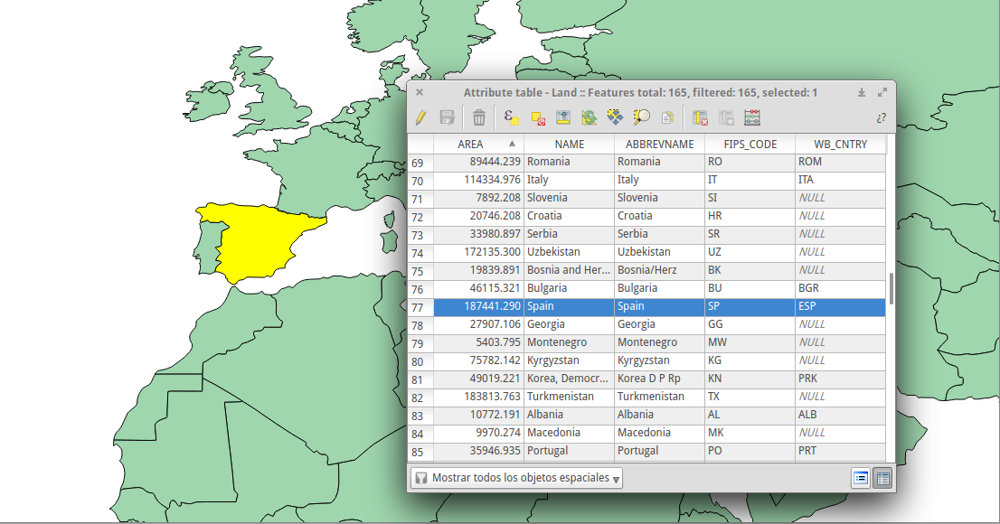
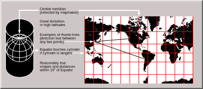
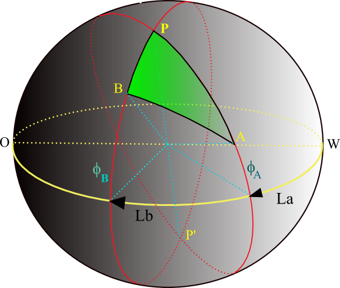

Jornada de herramientas Cartográficas
#Electionmaps
MEDIALAB-PRADO 10/10/15
Ejercicio con QGIS
Por Xosé Manuel Vilán/@xvilan y Jeśus García Villar/@ServiGIS
Índice
- Qué son los SIG
- Por qué QGIS
- Conceptos
- Ejemplo
1. Qué son los SIG
“Es un conjunto de herramientas que integra y relaciona diversos componentes (usuarios, hardware, software, procesos) que permiten la organización, almacenamiento, manipulación, análisis y modelización de grandes cantidades de datos procedentes del mundo real que están vinculados a una referencia espacial”
Para qué sirven
Hacer MAPAS

pero también dar una respuesta al WHERE?
- Trabajar con datos
- Integrar
- Almacenar
- Editar
- Analizar
- Compartir
- Visualizar
Cómo puede utilizarlos un periodista
- Visualizar información espacial
- Trabajar y editar cartografía de diferentes fuentes
- Generar cartografía propia
- Crear mapas dinámicos y estáticos
- Analizar tendencias con análisis espacial
- Preparar cartografía para usarla en otras plataformas: cartodb, D3.js, ...
Cómo funcionan
cada elemento gráfico está asociado a un registro ...
...y se puede trabaja con multiple información

image by Corso // CC BY-SA 3.0
{kind=link}
Qúe tipo de información
Formato:
Alojados en:
Algunos lugares con información espacial:
2.Por qué QGIS
QGIS es un SIG de escritorio de Código Abierto licenciado bajo GNU - General Public License.
QGIS es un proyecto oficial de Open Source Geospatial Foundation (OSGeo).
Corre sobre Linux, Unix, Mac OSX, Windows y Android y soporta numerosos formatos y funcionalidades de datos vector, datos ráster y bases de datos.
Tiene muchas ventajas
- Es relativamente sencillo de aprender y moverse por su interfaz.
- Tiene muchas herramientas que se añaden a través de un gestor de complementos.
- Como hay una comunidad de usuarios y desarrolladores ha crecido muy rápido en funcionalidades y al que se integran diversos proyectos como GRASS, SEXTANTE, …
- En su web hay manuales, ejemplos, etc.
- En la red hay multitud de videos, tutoriales y manuales.
No es el único pero es de los mejores
4. Conceptos
- Las proyecciones
- Los sistemas de coordenadas
- Los archivos shapefile
Las Proyecciones
Una proyección es una forma de representar La Tierra en una superficie plana.

Image by Chris Rywalt // CC BY-SA 3.0
{kind=link}
Se pueden clasificar según:
- La distorsión (equivalentes, conformes, equidistantes, alifáticas,...)
- La figura sobre la cual se proyecta (plano, cono, cilindro,...)
- La posición del plano y punto de proyección (ortográficas, estereográficas, gnómicas,...)
Las más frecuentes en web maping son las Proyecciones de Mercator

Conforme, cilíndrica, gnomónica
Los sistemas de coordenadas de referencia (SRC)
Un sistema de coordenadas es una forma de describir un lugar en un mapa o en la propia Tierra.
Image by L. Fransen (Livinus) // CC BY-SA 3.0
{kind=link}
Las coordenadas geográficas (Grado Minuto Segundo) las transformamos en coordenadas cartesianas (metros) mediante una proyección
Hay multitud de sistemas de coordenadas y tipos de proyección. Los datos espaciales llevan asociado un código EPSG para que el GIS conozca su SRC.
Ejemplos del sistema que emplean algunas aplicaciones web:
| Aplicación | S.Coord. | S.Referencia | EPSG |
|---|---|---|---|
| Google Earth | geográficas | WGS84 | 4326 |
| Google Maps | proyectadas | WGS84 | 3857 |
| OSM database | geográficas | WGS84 | 4326 |
| OSM WMS | proyectadas | WGS84 | 3857 |
Los archivos ESRI Shapefile
- ESRI Shapefile (SHP) es un formato propietario de datos espaciales
- Es un estándar que usan todos los GIS
- Es un formato vectorial
- Es multiarchivo, está formado por varios ficheros
- Al menos: .shp, .shx, .dbf
- En .prj se encuentra la proyección
3.Ejemplo